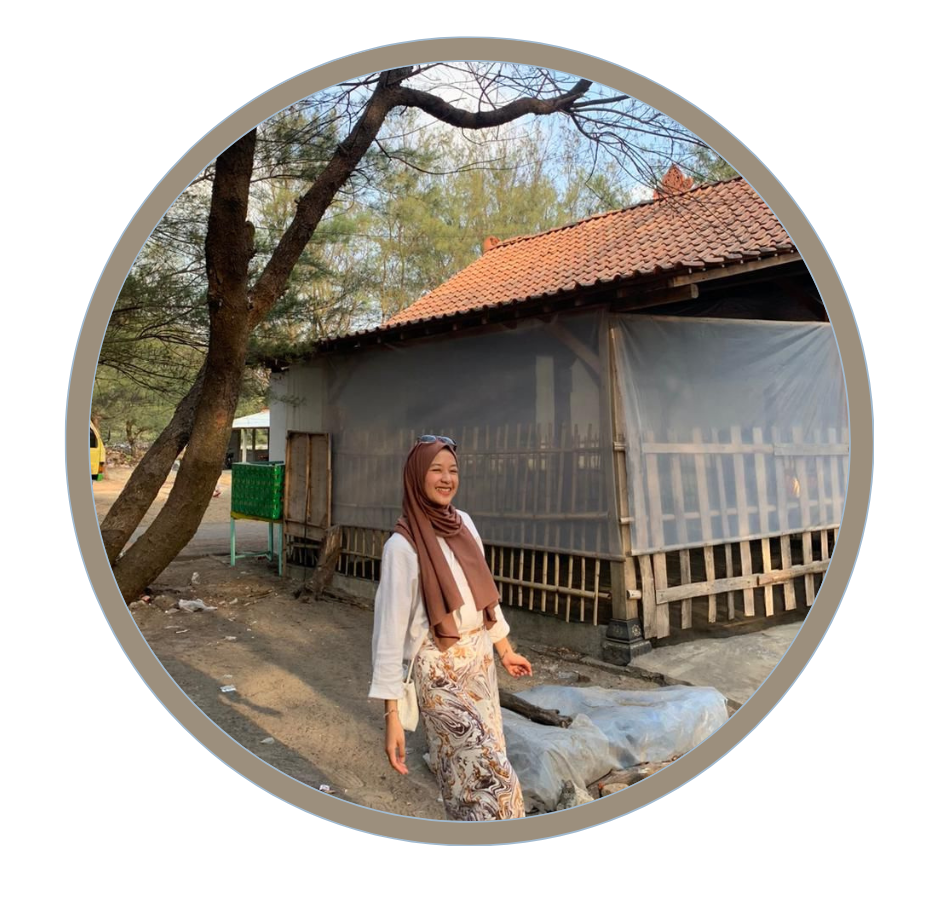

Syifa Salma Ramadhani
Phone: 0895423378078 | Email: salmaramadhani041@gmail.com
Umur : 20 tahun
Alamat :Kp Balenyengked 34/11 Desa Tanjungwangi Kab Subang
My Social Media:Hi, my name is Syifa Salma Ramadhani. I'm originally from Subang and currently live in Bandung. I haven't lived with my parents since junior high school because I had to move away to pursue my education, hehe! I'm an Informatics Engineering student with a strong interest in technology and digital development. Fun fact: I'm known as an extrovert, sociable, and enjoy interacting with lots of people. WOW! Furthermore, I also have experience working in the F&B industry as a barista, which has helped me hone my communication skills, teamwork skills, and dealing with various customer types. Furthermore, I enjoy trying new things and continuing to learn, both in technology and through work experience in the field. For me, a combination of technical and soft skills is essential for growth. I'm also used to working responsibly and enjoy every process I go through, both individually and in a team. I'm always open to new opportunities that can help me improve my skills and broaden my experience;]